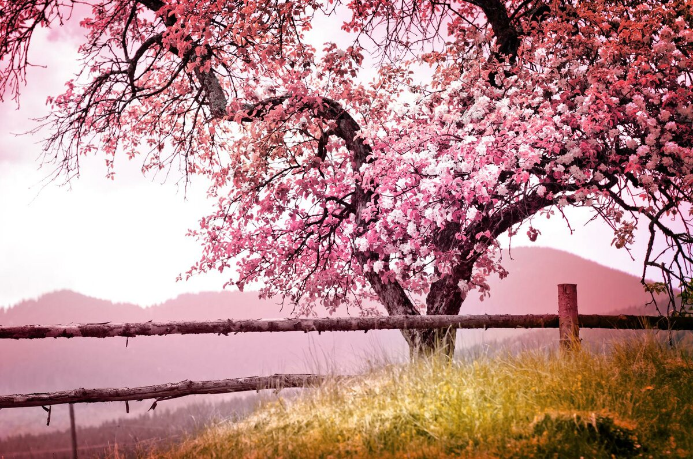
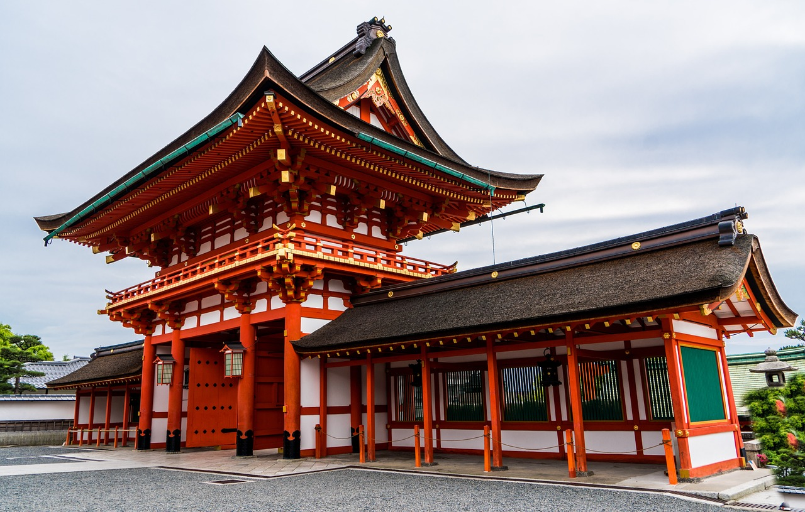

Семь основных принципов кодекса самураев
Благородство
Самурай не должен без причин вести себя жестоко, ему это не нужно, чтобы показать свою силу. Самурай вежливый, даже с врагами. Без уважения к людям ты становишься не лучше животного. Самурая уважают не только за его силу в бою, но и за то, как он ведет себя с другими людьми.
Долг и верность
Самурай отвечает за свои действия, которые добровольно принимает на себя, отвечает за содеянное. Он абсолютно преданный и верный своему начальнику и является образцом для своих подчиненных. Слово мужчины – это его следы, по ним ты можешь идти за ним, куда бы он ни шел. Следи лишь за тем, куда идешь ты сам!
Искренность и правдивость
Если самурай говорит, что он что-то сделает, он это выполнит. Ничто в этом мире не может помешать ему. Он не должен «давать слово» – обещать или присягать. Одно то, что он это сказал, уже является гарантией выполнения. Сказать и сделать – одно и то же.
Сочувствие
Интенсивные тренировки делают самураев быстрыми и сильными. Они отличаются от других, они приобретают силу, которая должна использоваться на благо всем. У самурая есть сочувствие, поэтому он использует любую возможность, чтобы быть полезным для других. Если судьба не дает ему такой возможности, он находит ее сам. Сочувствие самурая, в первую очередь, должно быть направлено на женщин и детей.
Храбрость и героизм
Подними себя над толпой. Прятаться в свой панцирь, как черепаха – значит вообще не жить. Самурай должен иметь дух героя. Это очень опасно и рискованно, но только при этом жизнь полноценна. Героизм не слепой, но умный и сильный. Замени свой страх уважением и осторожностью.
Честность и справедливость
Будь всегда в своих действиях честным. Верь в справедливость – не иных людей, а в ту, которая в тебе. Для самурая нет полутонов, когда речь идет о чести и справедливости, есть только черное или белое, правда или ложь. Любой честный человек, имеющий чистую душу, не должен бояться правды.
Честь и слава
Существует только один судья чести самурая: он сам. Принимаемые решения и совершенные действия – отражение того, кто ты есть на самом деле.
